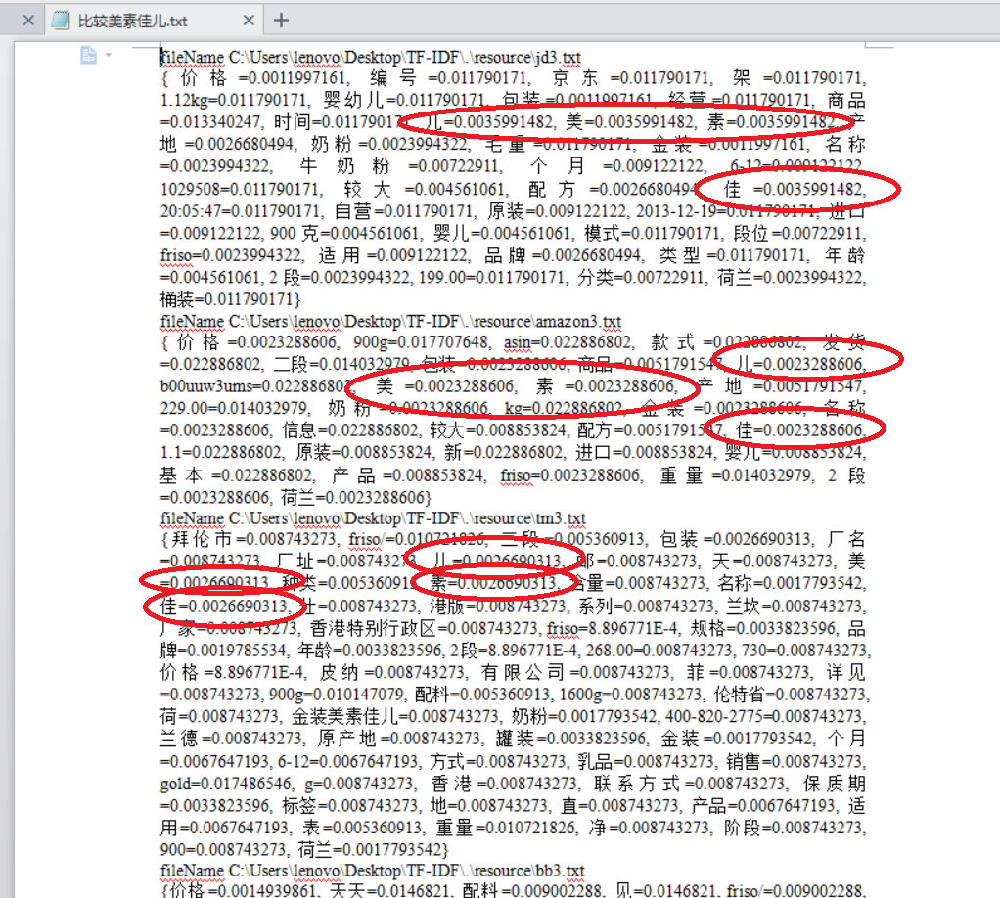

Created by 胡 杰
$$ L = W_1 * T + W_2 * R + W_3 * S $$
$$ L值越小，代理服务器性能越好 $$
$$ T 代表连接时间 $$
$$ R 连接失败率 $$
$$ S 传输速率 $$
$$ \frac{某个词在文章中出现次数}{文章总词数}(TF) ＊ log(\frac{语料库的文档总数}{包含该词文档数 ＋ 1}) $$

app.get('/type', function(req, res) {
request('typelist.php', function (error, response, body) {
data = JSON.parse(body);
if (!error && response.statusCode == 200 && data.status == 0) {
res.render('type', {
'title': 'test',
'data': data
});
}
});
});
include('db.php');
$sql = "SELECT * FROM type";
$mysqli_result = $mysqli->query($sql);
if($mysqli_result && $mysqli_result->num_rows > 0){
$result = array();
$result['status'] = 0;
$result['type'] = array();
while($row = $mysqli_result->fetch_all(MYSQLI_ASSOC)){
$result['type'] = $row;
}
}else{
$result['status'] = 1;
$result['type'] = array();
}
echo json_encode($result, JSON_UNESCAPED_UNICODE);
<!DOCTYPE html>
<html>
<head>
<%= title %>
</head>
<body>
<% data.type.forEach(function(e){ %>
- <%= e.name %>
<% }) %>
</body>
</html>